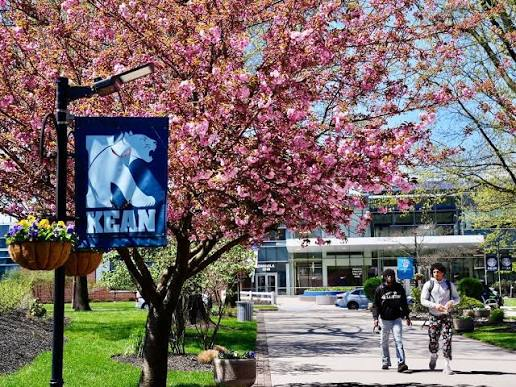

Residence hall / 01
Cougar Hall
Freshman-oriented suite-style living with two double bedrooms connected by a kitchenette and private bathroom. Shared lounges, a game room, business center and other common spaces make room for both focus and community.